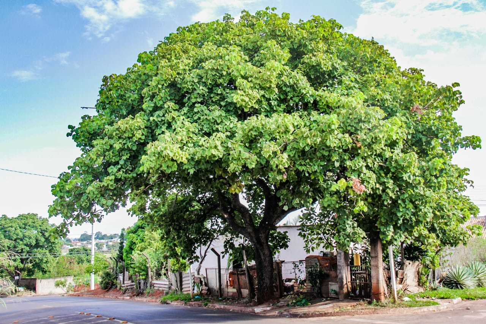

Bem-vindo ao PreservarHoje
Nosso objetivo é auxiliar pesquisadores na preservação de espécies nativas. Explore nosso banco de dados e contribua com novas informações.
Árvores Cadastradas
Pau Brasil - Pesquisador: João Silva
Nome científico: Paubrasilia echinata
Árvore nativa da Mata Atlântica, conhecida por sua madeira avermelhada e resistente.
Idade: 50 anos | Altura: 15 m | Diâmetro: 60 cm
Localização: -23.5505, -46.6333
Condição de Saúde: Boa | Histórico de Podas: Nenhum
Ipê Roxo - Pesquisadora: Maria Oliveira
Nome científico: Handroanthus impetiginosus
Famoso por suas flores roxas vibrantes, é símbolo nacional no Brasil.
Idade: 30 anos | Altura: 12 m | Diâmetro: 45 cm
Localização: -16.7225, -49.2565
Condição de Saúde: Excelente | Histórico de Podas: Leve em 2020
Pequi - Pesquisador: Carlos Ferreira
Nome científico: Caryocar brasiliense
Típico do Cerrado, conhecido por seus frutos utilizados na culinária regional.
Idade: 25 anos | Altura: 10 m | Diâmetro: 40 cm
Localização: -15.8267, -47.9218
Condição de Saúde: Boa | Histórico de Podas: Nenhum
Castanheira - Pesquisadora: Ana Pereira
Nome científico: Bertholletia excelsa
Nativa da Amazônia, conhecida pela produção das castanhas-do-pará.
Idade: 100 anos | Altura: 30 m | Diâmetro: 80 cm
Localização: -3.4653, -62.2159
Condição de Saúde: Excelente | Histórico de Podas: Nenhum
Cerejeira (Cherry Tree) - Pesquisador: Lucas Andrade
Árvore fictícia do Minecraft, com folhas rosas e tronco claro, decorativa no bioma Planície de Cerejeiras.
Altura: 5 blocos (fictício) | Localização: Bioma Planície de Cerejeiras
Plantas Cadastradas
Rosa do Deserto - Pesquisador: Pedro Lima
Nome científico: Adenium obesum
Planta ornamental conhecida por suas flores vibrantes e tronco engrossado.
Idade: 8 anos | Altura: 0,8 m | Diâmetro: 20 cm
Localização: -20.3155, -40.3128
Condição de Saúde: Boa | Histórico de Podas: Leve em 2023
Rosa Cherokee - Pesquisadora: Carla Souza
Nome científico: Rosa laevigata
Espécie trepadeira conhecida por suas flores brancas e pela lenda indígena.
Idade: 5 anos | Altura: 1,5 m | Diâmetro: 10 cm
Localização: -22.9068, -43.1729
Condição de Saúde: Excelente | Histórico de Podas: Nenhum
Vitória-Régia - Pesquisador: Marcos Almeida
Nome científico: Victoria amazonica
Planta aquática nativa da Amazônia, famosa por suas folhas gigantes que flutuam na água.
Idade: 3 anos | Diâmetro da Folha: 1,8 m
Localização: -3.119, -60.0217
Condição de Saúde: Boa | Histórico de Podas: Não aplicável
Espada-de-São-Jorge - Pesquisadora: João Silva
Nome científico: Sansevieria trifasciata
Uma planta resistente e popular por suas propriedades purificadoras de ar.
Idade: 5 anos | Altura: 60 cm | Diâmetro: 20 cm
Localização: -23.5505, -46.6333
Condição de Saúde: Muito Boa | Histórico de Podas: Nenhuma
Pitaya - Pesquisador: Eduardo Rocha
Nome científico: Hylocereus undatus
Cacto trepador conhecido por seus frutos exóticos de cor vibrante e sabor doce.
Idade: 6 anos | Altura: 2 m | Diâmetro: 15 cm
Localização: -19.9245, -43.9352
Condição de Saúde: Boa | Histórico de Podas: Leve em 2022
Dados de Pesquisadores
João Silva
- E-mail: joao.silva@pesquisa.org
- Área de especialização: Botânica
- Instituição de pesquisa: Universidade Verde
- Contato: (11) 9999-9999 | Rua das Árvores, 123
Maria Oliveira
- E-mail: maria.oliveira@pesquisa.org
- Área de especialização: Ecologia
- Instituição de pesquisa: Instituto Ambiental Brasileiro
- Contato: (61) 8888-8888 | Rua do Cerrado, 456
Carlos Ferreira
- E-mail: carlos.ferreira@pesquisa.org
- Área de especialização: Cerrado e Flora Nativa
- Instituição de pesquisa: Universidade do Cerrado
- Contato: (62) 7777-7777 | Av. das Flores, 789
Ana Pereira
- E-mail: ana.pereira@pesquisa.org
- Área de especialização: Conservação e Biodiversidade
- Instituição de pesquisa: Instituto Amazônico de Pesquisa
- Contato: (92) 6666-6666 | Rua das Castanheiras, 321
Lucas Andrade
- E-mail: lucas.andrade@pesquisa.org
- Área de especialização: Biomas Virtuais e Educação Ambiental
- Instituição de pesquisa: Centro de Estudos Ambientais
- Contato: (31) 5555-5555 | Av. Digital, 987
Projetos de Preservação
Confira alguns dos projetos desenvolvidos por nossos pesquisadores:
Projeto Mata Viva
Objetivo: Recuperação de áreas degradadas na Mata Atlântica.
Responsáveis: João Silva e Maria Oliveira.
Resultados: Plantio de 2.000 mudas em 2024.
Parceiros: Instituto Verde e ONG EcoAmigos.
Projeto Cerrado Sustentável
Objetivo: Conservação de espécies nativas do Cerrado.
Responsáveis: Carlos Ferreira e Ana Pereira.
Resultados: Mapeamento de 50 árvores em áreas de risco.
Parceiros: Universidade do Cerrado.
Sobre o Sistema
O sistema PreservarHoje foi criado para facilitar o registro e o compartilhamento de informações sobre espécies vegetais. Ele visa apoiar pesquisadores na conservação da flora nativa brasileira.
Nosso projeto é resultado da colaboração entre universidades e organizações ambientais comprometidas com a biodiversidade.
Equipe de Desenvolvimento: Alunos do curso de Sistemas para Internet.
Parceiros: Instituto Ambiental Brasileiro, Universidade Verde, ONG EcoAmigos.
Contato
Email: contato@preservarhoje.org | Telefone: (11) 1234-5678
Fale Conosco